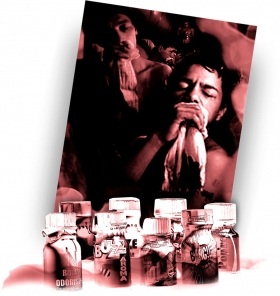

WHAT ARE INHALANTS?


“Inhalants” refers to the vapors from toxic substances which are inhaled to reach a quick high. Of more than 1,000 household and other common products that could be abused as inhalants, most often used are shoe polish, glue, toluene,1 gasoline, lighter fluid, nitrous oxide2 or “whippets,” spray paint, correction fluid, cleaning fluid, amyl nitrite3 or “poppers,” locker room deodorizers or “rush,” and lacquer thinner or other paint solvents.
Most of these produce effects similar to anesthetics, which slow down the body’s functions. After an initial high and loss of inhibition comes drowsiness, light-headedness and agitation.
The chemicals are rapidly absorbed through the lungs into the bloodstream and quickly reach the brain and other organs, sometimes causing irreversible physical and mental damage.
Users inhale the chemical vapors directly from open containers (“sniffing”) or breathe the fumes from rags soaked in chemicals (“huffing”). Some spray the substance directly into the nose or mouth, or pour it onto their collar, sleeves or cuffs and sniff them periodically. In “bagging,” the user may inhale fumes from substances inside a paper or plastic bag. Bagging in a closed area greatly increases the chances of suffocation.
“Poppers” and “whippets,” sold at concerts and dance clubs, are composed of poisonous chemicals that can permanently damage the body and brain.
They are included here to provide you with the truth about what these drugs are and what they do.
Most of these produce effects similar to anesthetics, which slow down the body’s functions. After an initial high and loss of inhibition comes drowsiness, light-headedness and agitation.
The chemicals are rapidly absorbed through the lungs into the bloodstream and quickly reach the brain and other organs, sometimes causing irreversible physical and mental damage.
Users inhale the chemical vapors directly from open containers (“sniffing”) or breathe the fumes from rags soaked in chemicals (“huffing”). Some spray the substance directly into the nose or mouth, or pour it onto their collar, sleeves or cuffs and sniff them periodically. In “bagging,” the user may inhale fumes from substances inside a paper or plastic bag. Bagging in a closed area greatly increases the chances of suffocation.
“Poppers” and “whippets,” sold at concerts and dance clubs, are composed of poisonous chemicals that can permanently damage the body and brain.
They are included here to provide you with the truth about what these drugs are and what they do.
- Air blast
- Aroma of men
- Bolt
- Boppers
- Bullet
- Discorama
- Hardware
- Hippie crack
- Laughing gas
- Medusa
- Moon gas
- Poppers
- Quicksilver
- Satan’s secret
- Snappers
- Toilet water
- Whippets
- Whiteout